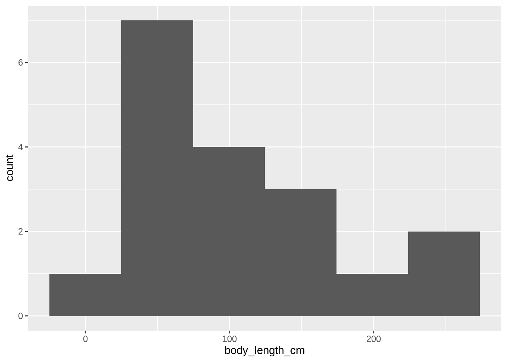
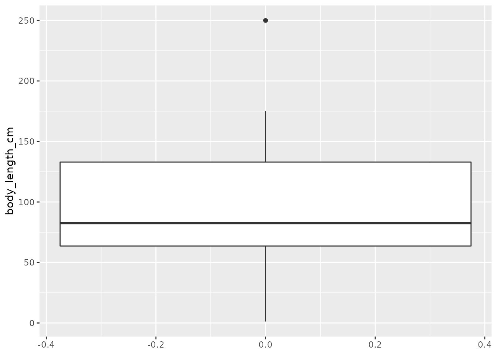
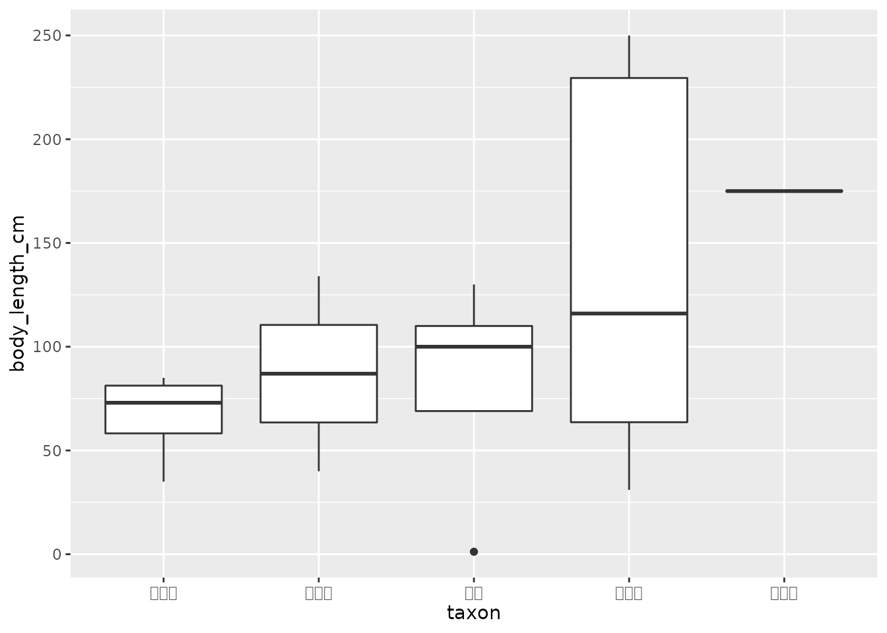

コードを表示
df_zoo <-
readr::read_csv("data-raw/tokushima_zoo_animals22.csv",
col_types = "ccdd_")df_zoo <-
readr::read_csv("data-raw/tokushima_zoo_animals22.csv",
col_types = "ccdd_")数学は統計学的な考え方において必須ではありません。
探索的データ分析
度数分布表、ヒストグラム、箱ヒゲ図、散布図、カルトグラム
データ分析の目的の一つに「データを要約すること」があることを示しました。 それでは実際に、データの要約に取り組んでみましょう。 例として動物データの体長を表示します。
df_zoo$body_length_cm [1] 63.5 100.0 64.0 110.0 85.0 66.0 80.0 168.0 134.0 250.0 130.0 175.0
[13] 31.0 NA 1.2 250.0 35.0 69.0 NA NA 40.0 NAこのデータの特徴として言えることは何でしょうか？ 動物データに含まれるわずか22件の数値でも、こうした数値の羅列からデータの特徴を説明することは困難です。 データ分析で扱うデータの件数は数千、数万となる場合もあり、一つ一つデータを見ていくことも 現実的ではありません。 そこでデータを要約するために代表値の計算やデータの可視化が行われます。
まず、複数の数値の性質や特徴をよく表す代表値について説明します。 代表値によるデータの要約は、データに含まれる数値の傾向を大まかに把握するために便利です。 代表値という名前の通り、数値によるデータの表現方法となります。
代表値によるデータを要約する方法にはさまざまなものがあります。代表的なものは平均値の計算です。
平均値にも複数の種類が存在しますが、ここではより一般的な算術平均を平均値の例として扱います。
最小値、最大値
データの分布を明らかにする。
ある値がデータに含まれる数を度数または頻度といいます。 動物のデータセットの分類群に対して度数を求めると次のようになります。
# 度数、頻度を英語で frequency といいます
count(df_zoo, taxon, name = "frequency") |>
knitr::kable()| taxon | frequency |
|---|---|
| 偶蹄類 | 1 |
| 奇蹄類 | 1 |
| 霊長類 | 4 |
| 食肉類 | 7 |
| 鯨偶蹄類 | 2 |
| 鳥類 | 5 |
| 齧歯類 | 2 |
対象が量的変数の場合は頻度を簡単に求めることができます。 それでは量的変数、特に連続変数に対し度数を求めるにはどうすれば良いでしょうか。 量的変数に対して連続変数では同じ値をとることが少ないです。 そのため連続変数の度数を求めるときは、変数がとり得る値をいくつかの階級に分けて考えます。
階級分けのために、まずは変数の最小値と最大値を調べましょう。 最小値と最大値はそれぞれmin()関数とmax()関数に対象の変数を与えることで求められます。
# 動物データの体長について最小値・最大値を求める
min(df_zoo$body_length_cm, na.rm = TRUE)[1] 1.2max(df_zoo$body_length_cm, na.rm = TRUE)[1] 250最小値・最大値を一度に求めるためのrange()関数も同様に扱えます。
range(df_zoo$body_length_cm, na.rm = TRUE)[1] 1.2 250.0最小値と最大値がわかったところで、次は階級を設定します。
データ中の度数をまとめて表形式にしたものは度数分布表と呼ばれます。
分類群の値ごとに同じデータがどれだけあるかをカウントして度数を求めます。
度数分布表は手元のデータの値をいくつかの階級 (class)
分散、標準偏差
代表値に対して、データを図で表現する方法を解説します。 ヒストグラム、箱ヒゲ図、散布図は数値を図で表すための方法として用いられます。
度数分布をグラフ化する方法の一つとしてヒストグラムがあります。
library(ggplot2)
df_zoo |>
ggplot(aes(body_length_cm)) +
geom_histogram(bins = 6)
階級の幅が一定でないヒストグラムが存在するよ。
データに対する説得力を増すためにも使われます。
データの特徴を素早く捉えることができます。
sort(df_zoo$body_length_cm) [1] 1.2 31.0 35.0 40.0 63.5 64.0 66.0 69.0 80.0 85.0 100.0 110.0
[13] 130.0 134.0 168.0 175.0 250.0 250.0median(df_zoo$body_length_cm, na.rm = TRUE)[1] 82.5(sort(df_zoo$body_length_cm)[9] + sort(df_zoo$body_length_cm)[10]) / 2[1] 82.5パーセンタイル
中央値を太い線で描く
箱
箱から髭が伸びているような図であることから箱ヒゲ図と呼ばれます。
df_zoo |>
ggplot(aes(y = body_length_cm)) +
geom_boxplot()
# 分類群ごとの箱ヒゲ図を描画
# あらかじめ中央値を計算し、グラフ上では中央値の並びで分類群が表示されるように
# 調整しています。
df_zoo |>
filter(!is.na(body_length_cm)) |>
group_by(taxon) |>
mutate(body_length_median = median(body_length_cm)) |>
ungroup() |>
mutate(taxon = forcats::fct_reorder(taxon, body_length_median)) |>
ggplot(aes(taxon, body_length_cm)) +
geom_boxplot()
相関係数
相関係数は変数間の因果関係を示すものではありません。 例えば、ある地域の８月において、毎日のアイスの売り上げ個数と熱中症患者数の間に 正の相関があった場合でも、アイスが熱中症の原因となっているわけではありません。 アイスの売り上げ、熱中症の双方に影響するもの、気温が原因です。 気温について考慮せずに分析を進めてしまうと、見せかけの因果関係を発生させてしまいます。 熱中症患者の増加を抑えるためにアイスの販売を規制するなどの誤った対策が取られてしまう 恐れがあります。